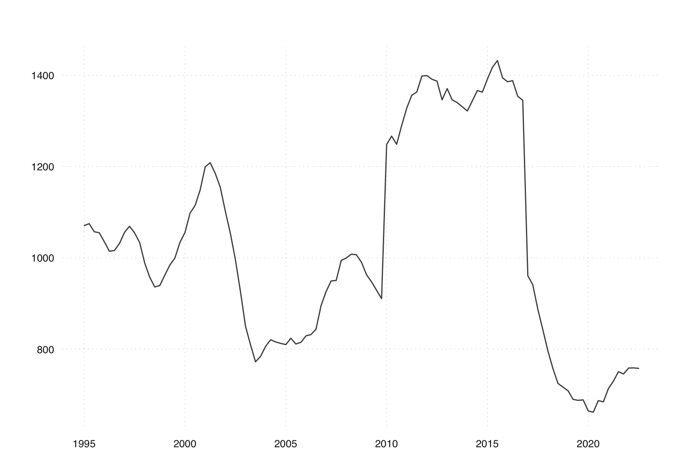

qs(seas(AirPassengers))
#> qs p-val
#> qsori 167.64858 0.0000
#> qsorievadj 203.07731 0.0000
#> qsrsd 0.00000 1.0000
#> qssadj 0.00000 1.0000
#> qssadjevadj 0.00000 1.0000
#> qsirr 0.00000 1.0000
#> qsirrevadj 0.00000 1.0000
#> qssori 115.08988 0.0000
#> qssorievadj 135.11320 0.0000
#> qssrsd 0.36904 0.8315
#> qsssadj 0.00000 1.0000
#> qsssadjevadj 0.00000 1.0000
#> qssirr 0.00000 1.0000
#> qssirrevadj 0.00000 1.000012 Presence of seasonality
You are reading an early draft of Seasonal Adjustment in R. This chapter should be readable but needs polishing.
Should a series be seasonally adjusted at all?
X-13 removes seasonality from the series, even if a series is not seasonal from the beginning. If a series is not seasonal, the resulting series may be bad.
Fortunately, X-13 contains a few tests that help users decide if a series is seasonal.
Before applying X-13, deciding if the series is seasonal may be necessary. This section discusses how to decide whether a series should be adjusted.
12.0.1 Basic Principle
In general, adjusting a non-seasonal series is less of a problem than not adjusting a seasonal series. So, unless you have good reasons to believe that a series is not-seasonal, adjust it. If in doubt, adjust!
12.0.2 Available Tests
To help you to make a good decision, X-13 offers a few formal checks:
The QS test is the primary test to evaluate seasonality both the original or in the adjusted series. It will be discussed in more detail in Chapter 15.
The Identifiable Seasonality Test (IDS) gives a simple yes or no answer to whether a series is seasonal or not. It is available for X11 adjustments only.
The M7 statistic applies critical values to the Identifiable Seasonality Test (IDS) and returns a simple yes or no answer.
Which tests are preferable, and how should a user decide if the tests are not aligned?
12.0.3 QS Test
The QS test has a few advantages compared to the IDS statistics and is generally preferable. It is available both with X11 and SEATS.
You can retrieve the results of the QS test by the qs() function. (We will say more about the QS statistic in Chapter 15).
The QS Statistic shows the degree of seasonality in various components of the seasonal adjustment. For our purposes, the first line is the most interesting. It shows that the QS value of the original series is 168, which comes with a p-value of essentially 0. This reads as there is a 0 probability that the null-hypothesis of seasonality in the original series can be rejected.
In other words, AirPassengers is a clearly seasonal series, which should not come as a surprise at this point.
12.0.4 Identifiable Seasonality Test
A second test for seasonality is the Identifiable Seasonality Test. It is only available in X11.
According to UK Office for National Statistics (2007), a value lower than 1.150 (monthly series) or lower than 0.900 (quarterly series) indicates that seasonality is clearly present.
UK Office for National Statistics. 2007. Guide to Seasonal Adjustment with x-12-ARIMA. http://www.ons.gov.uk/ons/guide-method/method-quality/general-methodology/time-series-analysis/guide-to-seasonal-adjustment.pdf.
At the same time, a value between 1.150 and 1.250 (monthly series) or between 0.900 and 1.050 (quarterly series) indicates that seasonality may be present.
Values above 1.250 (monthly series) or 1.050 (quarterly series) point to non-seasonal series.
As we have stated above, the recommendation is to adjust the series unless you have clear evidence that a series is not seasonal.
Let’s try AirPassengers:
The M7 value is way below the critical values. Accordingly, the Identifiable Seasonality Test indicates seasonality in the series.
12.0.5 Case Study
Consider the following less clear-cut series:
library(tsbox)
library(seasonal)
x <- ts(
c(
1070.67782091276, 1074.85048025033, 1057.22943663105, 1054.83329692382,
1035.00741277933, 1014.37654341674, 1016.01971482192, 1031.5736998743,
1055.97206482734, 1069.14603895638, 1054.70695712307, 1033.65404358999,
988.507205808669, 957.755772336067, 936.185046914472, 939.221279279722,
962.250799500941, 984.056833428967, 999.390633761089, 1033.68786613334,
1055.87289736274, 1097.92353618165, 1114.50822274577, 1148.65763657244,
1199.32404772514, 1208.39317300933, 1185.13960320363, 1154.58521771845,
1101.7137166423, 1053.89252948544, 996.495317493457, 926.283479008456,
850.048912454291, 809.84549670808, 772.216576162406, 784.114051995134,
806.261273184001, 820.618967152661, 815.649757299053, 812.501547645406,
809.899692888929, 823.778177350232, 811.211453993884, 814.868987237855,
829.047528533717, 831.891817984415, 843.653707473654, 895.684951210102,
926.544452180194, 949.41125175328, 950.333376822119, 994.228127170556,
999.697246815797, 1008.00877350773, 1006.7566419533, 990.419046839283,
962.941704204873, 947.541756501729, 929.161895739204, 910.588436791225,
1248.42457644542, 1266.67760866087, 1248.78020047598, 1290.47101093513,
1328.51898051507, 1356.02796471527, 1363.37837075383, 1398.27679451834,
1399.20602270507, 1391.19336700805, 1387.13912745033, 1346.03774501977,
1370.73051832038, 1346.29966480321, 1340.09701324613, 1331.07456050929,
1321.82409348173, 1343.5116656349, 1366.41043298961, 1363.10871463069,
1391.84216974474, 1417.38495449438, 1432.17468812037, 1394.40194160954,
1385.72476381292, 1388.23802327199, 1354.10595421438, 1345.15701390051,
960.801527083357, 941.027878841707, 887.618178201697, 842.12961787775,
795.717159404159, 757.35803147815, 724.93681522789, 716.66515476601,
708.682334791168, 689.925785264133, 687.748168972216, 688.809213406042,
664.421326451325, 661.822007527535, 687.161046216216, 684.548292412124,
713.757983905367, 729.917128362926, 750.569868821847, 745.544259228118,
758.516668782925, 758.841495662419, 757.815323362363
),
frequency = 4,
start = 1995
)
ts_plot(x)
If we apply standard SEATS seasonal adjustment, this does not seem to do anything:
What do formal statistics say?
qs(m)
#> qs p-val
#> qsori 0.00000 1.00000
#> qsorievadj 0.08751 0.95719
#> qsrsd 0.00000 1.00000
#> qssadj 0.00000 1.00000
#> qssadjevadj 0.08751 0.95719
#> qsirr 1.81436 0.40366
#> qsirrevadj 1.81436 0.40366
#> qssori 0.00000 1.00000
#> qssorievadj 0.78501 0.67536
#> qssrsd 0.26233 0.87707
#> qsssadj 0.00000 1.00000
#> qsssadjevadj 0.78501 0.67536
#> qssirr 1.92576 0.38179
#> qssirrevadj 1.92576 0.38179Let’s have a look at the first line. A QS value of 0 has a p-value of 1, meaning the Nul-Hypothesis of seasonality in the orgininal value can be savely rejected. According to this measure, it is clear that this series has no seasonality.
If we want to consider the M7 values, we need to use X11:
The QS statistic has to be the same for the unadjusted series but not for the adjusted one:
qs(m_x11)
#> qs p-val
#> qsori 0.00000 1.00000
#> qsorievadj 0.08751 0.95719
#> qsrsd 0.00000 1.00000
#> qssadj 0.00000 1.00000
#> qssadjevadj 0.00000 1.00000
#> qsirr 0.00000 1.00000
#> qsirrevadj 0.03306 0.98361
#> qssori 0.00000 1.00000
#> qssorievadj 0.78501 0.67536
#> qssrsd 0.26233 0.87707
#> qsssadj 0.00000 1.00000
#> qsssadjevadj 0.00000 1.00000
#> qssirr 0.00000 1.00000
#> qssirrevadj 0.08751 0.95719Because we use X11, we can now have a look at the M7 value:
udg(m_x11, "f3.m07")
#> f3.m07
#> 1.222If you look for simple answers, the "f2.idseasonal" gives you a simple yes or no answer. From the previous discussion, it should not be surprising that the answer is no.
udg(m_x11, "f2.idseasonal")
#> f2.idseasonal
#> "no"